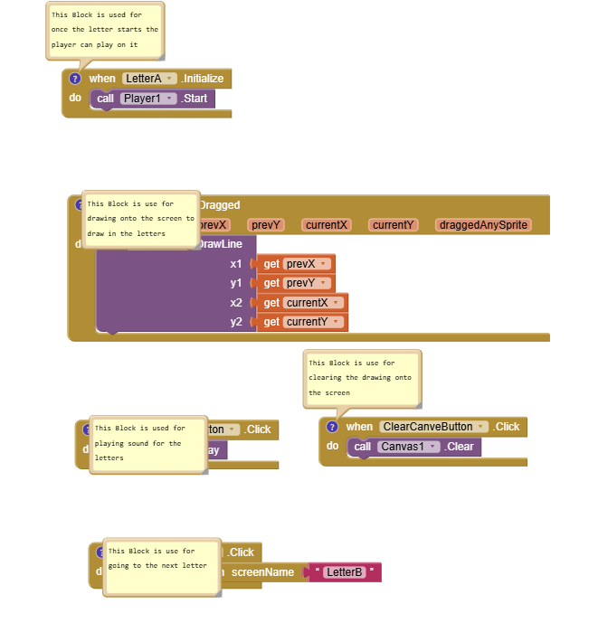

During my time in this unit, I immersed myself in the fast-paced world of mobile application development, moving from a general user of technology to a creator. I began by investigating the diverse landscape of apps—ranging from location-based services to leisure tools—and analyzing how businesses leverage this mobile power to reach global audiences on Apple and Android platforms.
The core of my experience was hands-on development. I stepped into the shoes of a software engineer, focusing on the full lifecycle of an app: design, development, testing, and maintenance. Rather than getting bogged down by writing thousands of lines of code from scratch, I adopted a professional, modular approach. I learned to integrate predefined code snippets with a variety of assets, including original sounds and interactive buttons. This method allowed me to focus on the high-level logic and user experience while maintaining efficiency.
To wrap up the project, I conducted thorough testing and gathered peer feedback to see how my app performed in the real world. This culminated in a final review where I evaluated the app’s functionality and identified strategic improvements, gaining a comprehensive understanding of what it takes to bring a functional, polished product to the mobile market.in this unit.
The unit 8 mobile app page, will show all of the information about the work that I have done.
There will be a video of the app that I have completed, and it will be shown on this page down below.
The image that will be on this page will be the code blocks for the mobile apps.